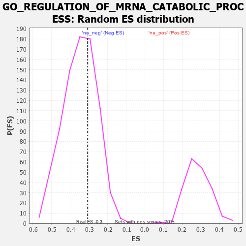

| | | Dataset | 7d |
| Phenotype | NoPhenotypeAvailable |
| Upregulated in class | na_neg |
| GeneSet | GO_REGULATION_OF_MRNA_CATABOLIC_PROCESS |
| Enrichment Score (ES) | -0.30558428 |
| Normalized Enrichment Score (NES) | -0.8808719 |
| Nominal p-value | 0.6583851 |
| FDR q-value | 0.96002305 |
| FWER p-Value | 1.0 |
Table: GSEA Results Summary
 Fig 1: Enrichment plot: GO_REGULATION_OF_MRNA_CATABOLIC_PROCESS
Fig 1: Enrichment plot: GO_REGULATION_OF_MRNA_CATABOLIC_PROCESS
Profile of the Running ES Score & Positions of GeneSet Members on the Rank Ordered List
| PROBE | GENE SYMBOL | GENE_TITLE | RANK IN GENE LIST | RANK METRIC SCORE | RUNNING ES | CORE ENRICHMENT | | 1 | PCBP4 | | | 44 | 2.875 | 0.1109 | No |
| 2 | CNOT7 | | | 348 | 0.750 | 0.1031 | No |
| 3 | AXIN2 | | | 383 | 0.713 | 0.1277 | No |
| 4 | APEX1 | | | 577 | 0.604 | 0.1278 | No |
| 5 | PARN | | | 660 | 0.572 | 0.1407 | No |
| 6 | AKT1 | | | 1040 | 0.476 | 0.1121 | No |
| 7 | PSMD7 | | | 1152 | 0.454 | 0.1165 | No |
| 8 | PSMD2 | | | 1181 | 0.450 | 0.1312 | No |
| 9 | NOCT | | | 1402 | 0.409 | 0.1200 | No |
| 10 | RBM10 | | | 1430 | 0.404 | 0.1330 | No |
| 11 | TAF15 | | | 1481 | 0.393 | 0.1426 | No |
| 12 | BOLL | | | 1561 | 0.381 | 0.1481 | No |
| 13 | TNPO1 | | | 1684 | 0.359 | 0.1473 | No |
| 14 | AGO2 | | | 1767 | 0.343 | 0.1508 | No |
| 15 | PSMD4 | | | 1811 | 0.335 | 0.1590 | No |
| 16 | FMR1 | | | 1816 | 0.334 | 0.1720 | No |
| 17 | PSMD6 | | | 1858 | 0.326 | 0.1800 | No |
| 18 | DCP1A | | | 1877 | 0.323 | 0.1908 | No |
| 19 | MYEF2 | | | 1992 | 0.306 | 0.1888 | No |
| 20 | PSME4 | | | 2143 | 0.285 | 0.1815 | No |
| 21 | PSMF1 | | | 2251 | 0.268 | 0.1788 | No |
| 22 | NBAS | | | 2299 | 0.260 | 0.1834 | No |
| 23 | PSMD5 | | | 2560 | 0.218 | 0.1595 | No |
| 24 | PDE12 | | | 2608 | 0.211 | 0.1621 | No |
| 25 | PUM2 | | | 2627 | 0.209 | 0.1683 | No |
| 26 | XRN1 | | | 2786 | 0.185 | 0.1559 | No |
| 27 | CIRBP | | | 2876 | 0.170 | 0.1515 | No |
| 28 | XPO1 | | | 2960 | 0.156 | 0.1474 | No |
| 29 | PSMD9 | | | 3179 | 0.125 | 0.1249 | No |
| 30 | CNOT1 | | | 3473 | 0.081 | 0.0912 | No |
| 31 | DHX9 | | | 3693 | 0.044 | 0.0654 | No |
| 32 | MTOR | | | 4114 | -0.025 | 0.0134 | No |
| 33 | PCID2 | | | 4258 | -0.051 | -0.0025 | No |
| 34 | PSME3 | | | 4280 | -0.056 | -0.0029 | No |
| 35 | PRR5L | | | 4418 | -0.080 | -0.0170 | No |
| 36 | LARP1 | | | 5616 | -0.349 | -0.1538 | No |
| 37 | PSMD1 | | | 5674 | -0.367 | -0.1461 | No |
| 38 | SET | | | 5895 | -0.434 | -0.1563 | No |
| 39 | UBB | | | 6090 | -0.503 | -0.1604 | No |
| 40 | ROCK1 | | | 6152 | -0.520 | -0.1470 | No |
| 41 | UBC | | | 7410 | -1.274 | -0.2540 | Yes |
| 42 | DCP2 | | | 7724 | -1.833 | -0.2192 | Yes |
| 43 | PSMD3 | | | 7907 | -2.887 | -0.1252 | Yes |
| 44 | PSMD8 | | | 7931 | -3.286 | 0.0050 | Yes |
Table: GSEA details [plain text format]

Fig 2: GO_REGULATION_OF_MRNA_CATABOLIC_PROCESS: Random ES distribution
Gene set null distribution of ES for GO_REGULATION_OF_MRNA_CATABOLIC_PROCESS